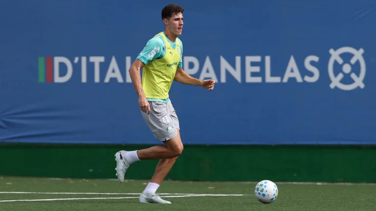

Noticias do Nosso Verdão hoje
Classificado às oitavas de final da CONMEBOL Libertadores após a vitória por 4 a 1 sobre o Junior Barranquilla-COL, na noite de quinta-feira (28), no Allianz Parque, o Palmeiras se reapresentou na manhã desta sexta (29), na Academia de Futebol, e começou a preparação para o duelo com a Chapecoense, no domingo (31), às 16h, na arena alviverde, pela 18ª rodada do Campeonato Brasileiro. O Verdão é o atual líder da competição nacional com 38 pontos. Sem Gustavo Gómez, Ramón Sosa, Mauricio, Jhon Arias, Flaco López, Giay e Emi Martínez (liberados para se apresentarem às suas seleções), além do restante dos titulares (que fizeram trabalhos regenerativos no centro de recovery e neurociência), o elenco palestrino foi a campo e, sob o comando da comissão de Abel Ferreira, realizou atividades técnicas com dinâmicas específicas como saídas de bola, marcações e construções de jogadas em dimensões reduzidas. As novidades foram o zagueiro Benedetti, que começou o processo de transição física depois de entorse no tornozelo direito, e o também zagueiro Bruno Fuchs, que treinou em tempo integral com os companheiros.
